PIPE BURSTING

Objective
To test the bursting pressure of given pipe.
Apparatus used:
Pipe Bursting Setup
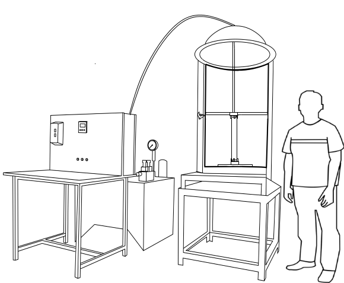Description Von Mises stress: is a value used to determine if a given material will yield or fracture. It is mostly used for ductile materials, such as metals.
A normal stress: is a stress, that occurs when a member is loaded by an axial force.
STEP
1
The pipe to be tested must have nearly uniform ends.
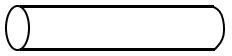
STEP
2
Insert the bottom flange to one end and wedge ring to other end. Then mount the top flange to the pipe and clamp it with the bolts.
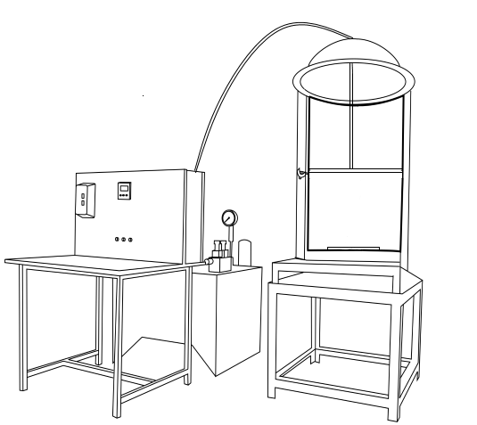 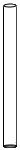 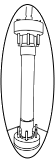 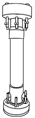 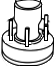 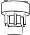 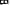
STEP
3
Start the power pack to pump in oil.
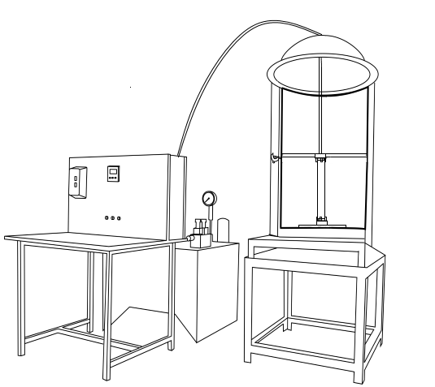 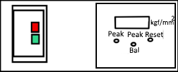
STEP 4
Start the machine, as the pressure nears to the theoretical pressure, slow down the pumping rate and wait for appearance of longitudinal cracks and consequent sudden drop in pressure.
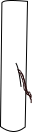 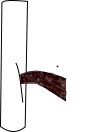 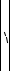 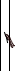 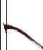 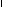
STEP 5
Observations and Calculations.
The pipe bursting pressure is calculated based on the Von-Mises stress for thick cylinder.
σvon = 1.73205 × P × r22⁄r22 - r12

Both ends of the pipe must be trimmed to ensure parallel faces.

© 2015 - SOLVE - The Virtual Lab @ NITK Surathkal, Department of Water Resources & Ocean Engineering